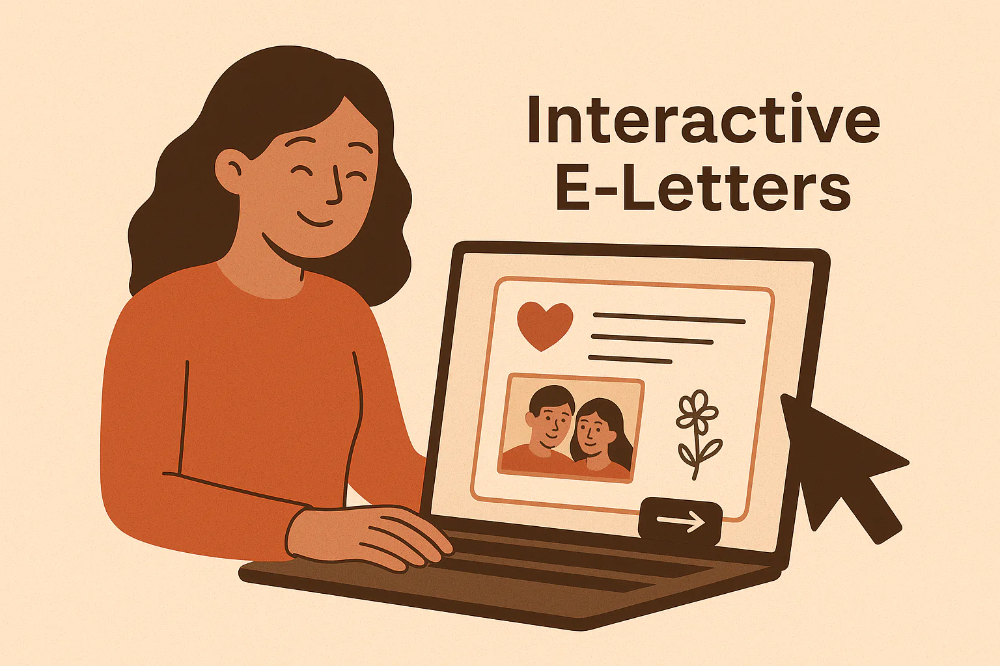

기념일
결혼을 더 단단하게 만드는 기념일 선물: 마음을 담은 디지털 러브레터
어떤 기념일 선물은 하루 예쁘고 끝납니다. 하지만 정말 오래 남는 선물은 축하가 끝난 뒤에도 관계를 더 깊게 만듭니다. 가족에 대한 헌신, 예약 발송된 깜짝 메시지, 인터랙티브 디지털 레터의 이미지를 바탕으로, 이 글은 사려 깊은 기념일 메시지가 심리학과 오래된 지혜가 모두 지지하는 방식으로 결혼을 어떻게 더 단단하게 만드는지 살펴봅니다.
어떤 기념일 선물은 하루 예쁘고 끝납니다. 하지만 정말 오래 남는 선물은 축하가 끝난 뒤에도 관계를 더 깊게 만듭니다. 가족에 대한 헌신, 예약 발송된 깜짝 메시지, 인터랙티브 디지털 레터의 이미지를 바탕으로, 이 글은 사려 깊은 기념일 메시지가 심리학과 오래된 지혜가 모두 지지하는 방식으로 결혼을 어떻게 더 단단하게 만드는지 살펴봅니다.
기념일은 늘 압박감과 함께 옵니다. 완벽한 선물을 고르고, 완벽한 저녁을 준비하고, 완벽한 말을 해야 할 것 같은 느낌. 그런데 많은 부부에게 정말 중요한 건 화려함이 아닙니다. 다시 한 번 선택받는 감각이죠. 여기 있는 이미지들이 그걸 잘 보여줍니다. 조용한 헌신 속에 모인 가족, 정성껏 예약해 둔 깜짝 메시지, 영상이 더해진 디지털 레터. 이 셋을 함께 보면 하나의 분명한 답이 보입니다. 기념일 선물은, 의도했고, 표현했고, 기억되는 사랑이어야 한다는 것.
맞춤 디지털 선물
사진, 메시지, 음악, 그리고 사랑하는 사람에게 바로 공유할 수 있는 링크가 담긴 페이지를 만들어보세요.
남편이나 아내의 기념일을 챙기면서 기념일 카드에 뭘 써야 할지 막막하다면, 핵심은 이겁니다. 당신의 말은 관계의 감정적 골조가 될 수 있습니다. 진심 어린 디지털 러브레터는 단순한 메시지가 아닙니다. 관심, 감사, 약속, 함께 쌓아온 시간을 보여 주는 증거죠. 그래서 제대로만 쓰면, 이것만큼 의미 있는 기념일 선물도 드뭅니다.
첫 번째 이미지는 결혼을 ‘함께 의미를 나누는 관계’로 보여 줍니다. 그 의미가 신앙이든, 가족의 의식이든, 감사든, 가치관이든 상관없습니다. 감정의 메시지는 분명하죠. 강한 관계는 거창한 이벤트보다 일상의 경외와 동행 속에서 자란다는 것. 두 번째 이미지는 성스러운 고요함에서 실용적인 다정함으로 옮겨 갑니다. 예약 발송된 깜짝 이메일은 사랑이 감정만으로 버티는 게 아니라, 미리 준비된 돌봄의 행동 속에서 살아남는다는 걸 보여 줍니다. 세 번째 이미지는 한층 더 따뜻하고 즉각적입니다. 음성 메모, 영상, 인터랙티브 레터를 통해 현대의 사랑이 텍스트만으로는 담기지 않는 감정을 더 개인적으로 남길 수 있다는 사실을 보여 주니까요.
이 조합은 기념일 선물이 이 비주얼들과 가장 잘 맞는 2luv의 순간이라는 걸 말해 줍니다. 여기서 말하는 건 드라마틱한 로맨스가 아닙니다. 오랫동안 사랑을 지키고, 정서적 친밀감을 돌보고, 대화를 기념품으로 바꾸는 일입니다. 그게 바로 기념일의 진짜 결입니다.
관계 연구는 건강한 결혼이 작고 반복적인 연결의 순간들로 만들어진다는 걸 꾸준히 보여 줍니다. 세계에서 가장 잘 알려진 결혼 연구자 중 한 명인 심리학자 존 가트만 박사는 어떤 부부가 잘 지내고, 어떤 부부가 멀어지는지 수십 년 동안 연구해 왔습니다. 그의 핵심 발견 중 하나는 관계를 향한 상대의 신호에 강한 부부가 자주 반응한다는 점입니다. 일상에서 그 신호는 아주 사소합니다. 눈빛, 질문, 농담 한마디, 문자, 사려 깊은 메시지 같은 것들. 배우자가 ‘나를 알아봐 줬다’고 느끼고 그에 대한 반응을 받으면, 신뢰는 자랍니다.
이 부부들이 화를 안 내거나 다투지 않는다는 뜻은 아닙니다. 다만 일상에서 부정적인 상호작용보다 긍정적인 상호작용이 훨씬 더 많다는 뜻이죠.
존 가트만, 「가트만 연구소 / 안정적인 관계에 대한 연구」
기념일 메시지는 막연한 칭찬이 아니라, 농축된 긍정적 상호작용일 때 가장 힘이 셉니다. 구체적이고, 진심이 있고, 감정이 분명해야 합니다. 단순히 “기념일 축하해”라고만 쓰는 대신, “힘들었던 한 해를 버티는 동안 참 많이 참고 함께해 줘서 고마워”라든지, “하루를 마칠 때 당신 목소리를 들으면 아직도 마음이 놓여”처럼 말할 수 있습니다. 구체성은 감정에 믿음을 줍니다.
브레네 브라운의 취약성에 대한 작업도 여기에 정확히 들어맞습니다. 오래가는 친밀감은 겉보기 좋은 칭찬보다, 솔직하게 보일 용기에서 시작됩니다. 기념일 메시지가 힘을 얻는 순간은, 다듬어진 문장을 넘어서 실제 감사, 그리움, 존경, 용서, 희망이 드러날 때입니다.
취약성은 사랑, 소속감, 기쁨, 용기, 공감, 창의성이 태어나는 곳이다.
브레네 브라운, 『Daring Greatly』
사랑에 대한 고전적인 사유도 같은 말을 합니다. 에리히 프롬은 『사랑의 기술』에서 사랑은 저절로 찾아오는 기분이 아니라, 돌봄과 책임, 존중, 앎이 필요한 실천이라고 말했습니다. 이 생각은 기념일과 아주 잘 맞습니다. 좋은 기념일 선물은 이렇게 말하죠. “나는 당신을 사랑하는 기분만 가진 게 아니라, 당신을 향해 사랑을 실천하고 있어.”
사랑은 믿음의 행위이고, 믿음이 적은 사람은 사랑도 적다.
에리히 프롬, 『사랑의 기술』
결혼의 바탕이 신앙인 부부에게는 첫 번째 이미지가 오래된 종교적 지혜와도 이어집니다. 함께하는 영적 실천은 하나됨과 겸손, 서로에 대한 돌봄을 더 단단하게 만들죠. 종교를 떠나서도 의식은 중요합니다. 가족치료사들은 종종 의식이 소속감과 안정감을 만든다고 말합니다. 기념일 편지는 그런 의식 중 하나가 될 수 있습니다. 매년 다시 꺼내 보는 기록, 사랑이 어떻게 변하고 또 견뎌 왔는지를 적어 둔 증언처럼요.
물건 선물도 좋지만, 인터랙티브 디지털 선물만의 장점이 있습니다. 당신의 목소리, 호흡, 사진, 둘만 아는 기억, 그리고 정확한 문장을 담을 수 있다는 점이죠. 그래서 감정의 결을 훨씬 잘 살릴 수 있습니다. 2luv의 디지털 레터는 글로 적은 회상, 영상 클립, 사진 기억, 예약 발송 같은 요소를 담을 수 있습니다. 한마디로, 메시지를 하나의 경험으로 바꿀 수 있게 해 줍니다.
많은 부부에게 가장 좋은 기념일 선물 아이디어는 꽃, 저녁 식사, 주얼리를 대체하는 게 아닙니다. 그 의미를 말해 주는 말을 곁들이는 거죠. 목걸이는 “당신이 생각났어”라고 말합니다. 러브레터는 “당신이 왜 내게 중요한지 말해 주고 싶어”라고 말하죠. 둘이 합쳐지면 쉽게 잊히지 않습니다.
기념일 메시지를 평범한 인사말이 아니라 묵직한 문장으로 만들고 싶다면, 간단한 감정 구조를 따라가면 됩니다. 기억으로 시작하고, 감사로 이어 가고, 존경하는 점을 짚고, 함께 버텨 온 시간을 인정한 뒤, 다시 약속으로 마무리하세요. 이 순서는 애착이 깊어지는 흐름과 닮아 있습니다. 지나온 시간, 현재의 안정감, 그리고 미래를 향한 의도가 차례로 놓이기 때문입니다.
이 구조가 피하는 건 하나입니다. 내용 없는 상투어. 가장 강한 기념일 편지는 구체적입니다. “당신은 정말 대단해”라고만 하지 않죠. “삶이 무거웠던 시기에도 당신은 끝까지 다정했고, 그게 우리 집의 공기를 바꿨어”라고 말합니다. 구체적인 말은 감정적으로 믿을 수 있습니다. 믿을 수 있는 말은 오래 남습니다.
이 기념일 메시지 예시를 2luv 디지털 선물, 인터랙티브 레터, 예약 깜짝 이메일에 활용해 보세요.
이 문구들은 결혼을 영적 언약으로 여기고, 신앙을 통해 감사를 표현하고 싶은 부부에게 특히 잘 어울립니다.
가장 효과적인 디지털 기념일 선물은 층이 있습니다. 위의 템플릿 중 하나로 시작한 뒤, 배우자만 알아볼 수 있는 디테일을 더하세요. 둘이 처음 함께 찍은 사진을 넣고, 마지막 문단을 읽는 짧은 영상을 붙여도 좋습니다. 감정의 흐름을 만들고 싶다면 저녁 식사 전에, 근무 시간 중에, 혹은 결혼식이 시작된 정확한 시간에 메시지가 도착하게 예약해 보세요. 이런 작은 타이밍 선택만으로도 메시지는 훨씬 더 영화처럼, 훨씬 더 가까이 느껴집니다.
이 구조가 잘 먹히는 이유는 사람들이 사랑을 기억하는 방식과 닮아 있기 때문입니다. 이야기, 이미지, 목소리, 기대감으로 기억하니까요. 이건 단순한 콘텐츠가 아닙니다. 감정을 설계하는 일이죠.
오래 함께한 관계에서 인간이 가장 깊게 원하는 것 중 하나는, 이론 속에서 사랑받는 게 아니라 현실 속에서 보이는 것입니다. 노력하는 모습으로 보이고, 지친 모습으로 보이고, 성장하는 모습으로 보이고, 묵묵히 지키는 모습으로 보이는 것. 그래서 의미 있는 기념일 메시지가 중요합니다. 배우자에게 이렇게 말해 주는 셈이니까요. “나는 당신이 어떤 사람인지, 우리가 무엇을 만들어 왔는지, 그리고 왜 여전히 고마운지 보고 있어.”
그러니 올해 기념일 선물을 고른다면, 말의 힘을 과소평가하지 마세요. 2luv의 디지털 러브레터에는 기억, 취약함, 감사, 약속이 한꺼번에 담길 수 있습니다. 때로 결혼이 가장 필요로 하는 선물은 더 요란한 무언가가 아니라, 더 진실한 무언가입니다.
이 이야기와 연결된 행사, 카테고리, 태그의 2luv 페이지를 계속 둘러보세요.
이 글이 마음에 들었다면, 비슷한 주제와 행사, 메시지 아이디어를 담은 관련 카테고리와 태그도 계속 살펴보세요.
 기념일
기념일 관계는 거창한 이정표로만 깊어지지 않는다. 오히려 손글씨로 남긴 메모, 자라나는 배 위에 얹은 손, 함께 써 내려간 일기처럼 작고 반복되는 다정함이 관계를 단단하게 만든다. 이런 친밀한 장면에서 출발한 이 글은, 기념일 선물이 어떻게 사랑의 살아 있는 기록이 될 수 있는지, 그리고 2luv로 실제로 보낼 수 있는 말들로 어떻게 완성할 수 있는지 짚어본다.
이전 글 기념일
기념일 가장 중요한 기념일 메시지는 꼭 가장 시적인 문장은 아닐지도 모릅니다. 오히려 가장 솔직한 말일 때가 많죠. 믿음, 작은 행동, 손글씨로 적은 사랑에서 영감을 얻은 이 글은, 관계 연구를 바탕으로 커플이 의도적인 문장으로 다시 연결되는 방법과 2luv를 위한 의미 있는 메시지 템플릿을 소개합니다.
다음 글 기념일 관계는 거창한 이정표로만 깊어지지 않는다. 오히려 손글씨로 남긴 메모, 자라나는 배 위에 얹은 손, 함께 써 내려간 일기처럼 작고 반복되는 다정함이 관계를 단단하게 만든다. 이런 친밀한 장면에서 출발한 이 글은, 기념일 선물이 어떻게 사랑의 살아 있는 기록이 될 수 있는지, 그리고 2luv로 실제로 보낼 수 있는 말들로 어떻게 완성할 수 있는지 짚어본다.
하이라이트 읽기 특별한 순간
특별한 순간 어떤 발렌타인데이 메시지는 그 순간엔 달콤하지만 금세 잊힙니다. 반면 어떤 문장은 오래도록 보관되고, 다시 읽히고, 시간이 지나도 마음에 남습니다. 오래 가는 사랑의 이미지, 손글씨의 다정함, 예약 발송되는 디지털 서프라이즈에서 힌트를 얻어, 이 글에서는 친밀하고 기억에 남으며 진심으로 느껴지는 발렌타인데이 메시지를 쓰는 방법을 소개합니다.
하이라이트 읽기
기념일어떤 사랑은 시간이 갈수록 더 조용해지고, 더 깊어지고, 더 아름다워집니다. 디지털 러브레터, 오래 가는 동행, 함께 나누는 영적인 친밀감에서 얻은 영감을 바탕으로, 이 글은 시간이 지나도 낡지 않고 개인적이며 오래 기억되는 기념일 메시지를 쓰는 법을 보여줍니다.
하이라이트 읽기